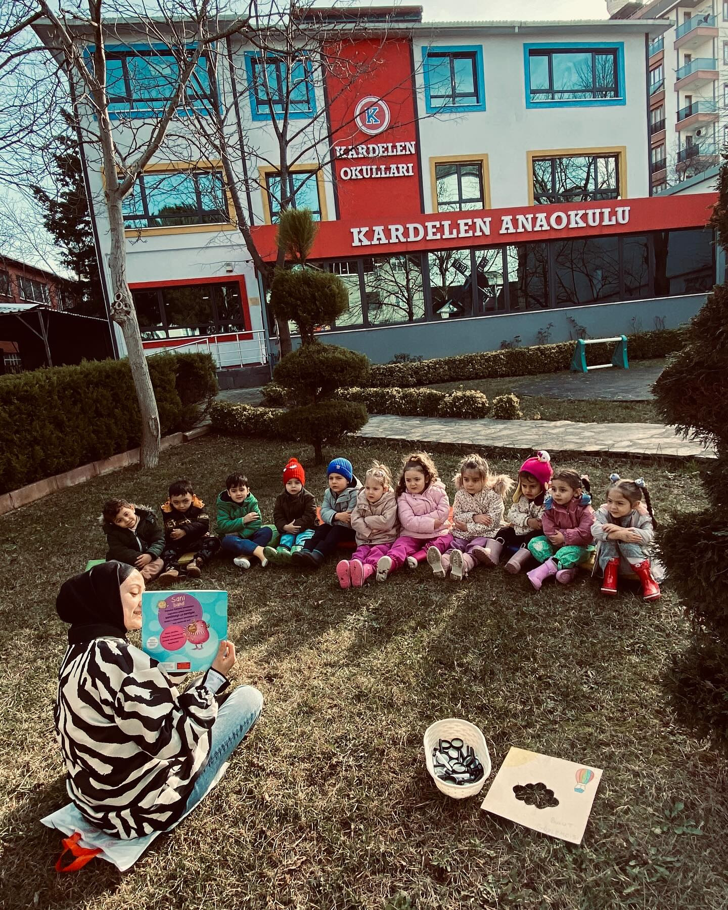

Kardelen Anaokulu olarak, en kıymetli varlıklarımız olan çocuklarımızı güvenli, sevgi dolu ve eğitici bir ortamda geleceğe hazırlıyoruz. Kurulduğumuz günden bu yana amacımız; her çocuğun potansiyelini keşfetmesine, mutlu ve özgüvenli bir birey olarak gelişmesine katkı sağlamaktır.
Bizler için her çocuk biriciktir ve her biri kendi hızında, kendi yolunda öğrenir. Bu anlayışla, çocuklarımızın bireysel farklılıklarını gözetiyor, onların ilgi alanlarına ve ihtiyaçlarına uygun etkinliklerle gelişimlerini destekliyoruz.
Deneyimli ve alanında uzman öğretmenlerimiz, oyun tabanlı eğitim yaklaşımımız sayesinde öğrenmeyi eğlenceli hale getirirken çocuklarımızın sosyal, duygusal, bilişsel ve fiziksel becerilerini de geliştirmelerine yardımcı oluyor.
Çocuklarımızın kendilerini değerli hissettiği, güvenli ve hijyenik bir eğitim ortamı sağlıyoruz.
Çocukların doğal merakını ve öğrenme isteğini destekleyen etkinliklerle eğlenceli bir şekilde öğrenmelerine imkan veriyoruz.
Grup etkinlikleriyle işbirliği, empati, sorumluluk alma gibi sosyal becerilerini güçlendiriyoruz.
Yaratıcılıklarını ortaya çıkaran, kendilerini ifade etmelerini kolaylaştıran çeşitli etkinlikler düzenliyoruz.
Çünkü biz sadece bir okul değil, çocuklarınız için ikinci bir yuvayız. Her gün güler yüzle karşılanan çocuklarımız, burada hem öğreniyor hem de arkadaşlık kuruyor, keşfediyor, oyun oynuyor ve mutlu oluyor.
Kardelen Anaokulu olarak vizyonumuz; sevgi, güven ve kaliteyi merkeze alarak çocuklarımızın geleceğine sağlam temeller atmaktır. Misyonumuz ise, aile sıcaklığında bir eğitim ortamı sunarak çocuklarımızı hayata en iyi şekilde hazırlamaktır.
Biz, her bir öğrencimizin gözlerindeki ışıltıyı koruyabilmek ve onların mutlu birer birey olmalarına katkıda bulunabilmek için buradayız.
Kardelen Anaokulu — Çocuklarınızın güvenle büyüdüğü, mutlulukla öğrendiği ikinci evi.